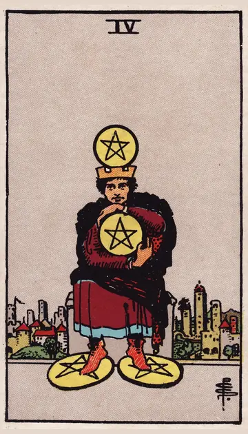

正位置ペンタクルの4の正位置
キーワード：安定・守り・執着
恋愛
関係を大切に守ろうとする時です。
相手の気持ちあなたを、誰にも渡したくないと感じているようです。
この先安定した関係が、続きそうです。
アドバイス安心できる関係を、大切に育てましょう。
気をつけること相手を、独り占めしようとしないように。
この先安定した関係が、続きそうです。
アドバイス安心できる関係を、大切に育てましょう。
気をつけること相手を、独り占めしようとしないように。
人間関係
身近な人との関係を、守りたくなる時です。
相手の気持ちあなたとの関係を、大切に守りたいと感じているようです。
この先信頼できる関係が、しっかり保たれそうです。
アドバイス信頼できる人との関係を、大切にしましょう。
気をつけること心を閉ざしすぎないように。
この先信頼できる関係が、しっかり保たれそうです。
アドバイス信頼できる人との関係を、大切にしましょう。
気をつけること心を閉ざしすぎないように。
仕事・学業
堅実に、守りを固める時期です。
この先お金の面で、安定が得られそうです。
アドバイス収支や貯金を、見直しましょう。
気をつけること守りに入りすぎて、チャンスを逃さないように。
アドバイス収支や貯金を、見直しましょう。
気をつけること守りに入りすぎて、チャンスを逃さないように。
お金
お金を、しっかり守れる時です。
この先蓄えが、安心につながりそうです。
アドバイス貯金を続け、備えを固めましょう。
気をつけること出し惜しみしすぎないように。
アドバイス貯金を続け、備えを固めましょう。
気をつけること出し惜しみしすぎないように。
生活
安定した暮らしを、守れる時です。
この先安定した毎日が続きそうです。
アドバイス今の暮らしの良さを、大切にしましょう。
気をつけること変化を怖がりすぎないように。
アドバイス今の暮らしの良さを、大切にしましょう。
気をつけること変化を怖がりすぎないように。
今日の運勢
慎重に過ごすのが良い日です。
この先堅実な選択が、良い結果につながりそうです。
アドバイス計画的にお金を使いましょう。
気をつけること出し惜しみしすぎないように。
アドバイス計画的にお金を使いましょう。
気をつけること出し惜しみしすぎないように。
逆位置ペンタクルの4の逆位置
キーワード：手放す・浪費・不安定
恋愛
執着を手放し、心を開ける時です。
相手の気持ちあなたへの執着を、手放そうとしているようです。
この先執着を手放せば、関係が楽になりそうです。
アドバイス相手を信じて、少し自由を尊重しましょう。
気をつけること反動で、浪費しないように。
この先執着を手放せば、関係が楽になりそうです。
アドバイス相手を信じて、少し自由を尊重しましょう。
気をつけること反動で、浪費しないように。
人間関係
固まった関係を、見直せる時です。
相手の気持ちあなたとの関係を、もう少し自由にしたいと感じているようです。
この先新しい縁が、生まれそうです。
アドバイス新しい人とも、関わってみましょう。
気をつけること急に態度を変えないように。
この先新しい縁が、生まれそうです。
アドバイス新しい人とも、関わってみましょう。
気をつけること急に態度を変えないように。
仕事・学業
お金の出入りが、不安定になりやすい時期です。
この先見直すことで、安定を取り戻せそうです。
アドバイス出費を記録して、見直しましょう。
気をつけること大きな買い物は、慎重に。
アドバイス出費を記録して、見直しましょう。
気をつけること大きな買い物は、慎重に。
お金
お金の出入りが、不安定になりやすい時です。
この先見直せば、安定を取り戻せそうです。
アドバイス出費を記録して、見直しましょう。
気をつけること反動で浪費しないように。
アドバイス出費を記録して、見直しましょう。
気をつけること反動で浪費しないように。
生活
物や習慣への執着を、手放せる時です。
この先身軽な暮らしになりそうです。
アドバイス使っていない物を、整理しましょう。
気をつけること手放しすぎて、困らないように。
アドバイス使っていない物を、整理しましょう。
気をつけること手放しすぎて、困らないように。
今日の運勢
出費が増えやすい日です。
この先出費を抑えれば、落ち着きそうです。
アドバイス本当に必要なものだけ、買いましょう。
気をつけること財布や貴重品の管理に気をつけて。
アドバイス本当に必要なものだけ、買いましょう。
気をつけること財布や貴重品の管理に気をつけて。
このページの文章は、アプリ「ひとやすみタロット」の結果に使っている文章です。アプリでは、あなたの相談や、カードが出た位置（今の状況・これからの流れ・アドバイス）に合わせて、この中から文章を選びます。逆位置の読み方は逆位置のことをご覧ください。
「ペンタクルの4」が出たら、あなたの相談ではどう読む？
アプリでは、質問への答えに合わせて、カードの言葉をあなたの相談に合わせて届けます。
Android 対応・会員登録なし